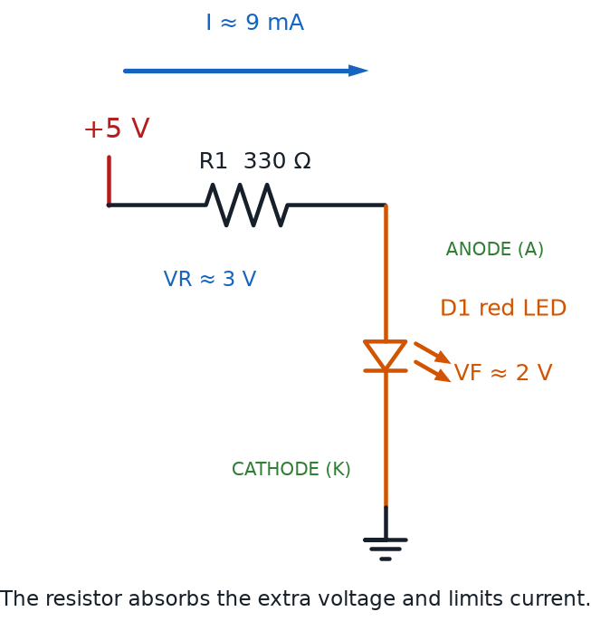

Current, Charge, Units, and Electrical Safety
Summary
Building on Chapter 1, this chapter covers how current actually flows (electron flow vs. conventional current), electrical safety rules, and the standard units students will see printed on every component in their kit: volts, amps, watts, and ohms. Safety habits introduced here apply to every hands-on chapter that follows.
Concepts Covered
This chapter covers the following 19 concepts from the learning graph:
- Voltage Drop
- Current Flow
- Electron Flow
- Conventional Current
- Electric Charge
- Potential Difference
- Electrical Safety
- Power Rating
- Heat Dissipation
- Current Limiting
- Voltage Division
- Kirchhoff's Current Law
- Kirchhoff's Voltage Law
- AC vs DC
- Battery Polarity
- Power Supply Voltage
- Common Ground
- Forward Voltage
- Conductivity
Prerequisites
This chapter builds on concepts from:
Charge It Up!
 Welcome back, builder! Chapter 1 gave you the vocabulary of voltage, current, and resistance. This chapter hands you a new power: reading every unit printed on your kit's parts like a pro, and wiring your circuits the safe way, every single time. We'll also settle a question that trips up almost every beginner — which way does current actually go? — before finishing with the safety habits every builder needs before touching a single wire. Let's light it up!
Welcome back, builder! Chapter 1 gave you the vocabulary of voltage, current, and resistance. This chapter hands you a new power: reading every unit printed on your kit's parts like a pro, and wiring your circuits the safe way, every single time. We'll also settle a question that trips up almost every beginner — which way does current actually go? — before finishing with the safety habits every builder needs before touching a single wire. Let's light it up!
Electric Charge: What's Actually Being Pushed?
Chapter 1 explained that voltage pushes current through a circuit, but what exactly is being pushed? The answer is electric charge — a basic property of matter that comes in two types, positive and negative. Electrons carry negative charge, and protons inside an atom's nucleus carry positive charge. Opposite charges attract each other, while like charges push each other apart.
When a battery separates positive and negative charge onto its two terminals, it creates an imbalance between them. That imbalance is exactly what Chapter 1 called voltage, and its more precise, technical name is potential difference — the amount of electrical "push" available between two specific points, measured in volts. The bigger the potential difference between a battery's terminals, the harder it can push charge through a circuit once a path is available.
Think of potential difference as a hill. The top of a tall hill has more potential to send a ball rolling than the top of a small bump does. A 9-volt battery sits at the top of a taller "electrical hill" than a 1.5-volt AA battery, so it pushes charge harder through an identical circuit.
Same Idea, More Precise Name
 Voltage and potential difference are the same measurement, just like "current" and "amps" describe the same thing from two angles. Engineers reach for "potential difference" whenever they want to be precise about exactly which two points they're measuring between.
Voltage and potential difference are the same measurement, just like "current" and "amps" describe the same thing from two angles. Engineers reach for "potential difference" whenever they want to be precise about exactly which two points they're measuring between.
The Units You'll See on Every Component
Every part in your kit prints its ratings using a small set of standard units. You already met the ideas behind most of them in Chapter 1 — here they are gathered into one reference table you can bookmark and return to all course long.
| Quantity | Symbol | Unit Name | Abbreviation | What It Tells You |
|---|---|---|---|---|
| Voltage (potential difference) | \( V \) | volt | V | How hard charge is being pushed |
| Current | \( I \) | amp (ampere) | A | How much charge flows past a point each second |
| Resistance | \( R \) | ohm | Ω | How much a component fights the flow |
| Power | \( P \) | watt | W | How much work a circuit can do each second |
Keep this table nearby. Every resistor, LED, and battery in your kit lists its numbers using exactly these units, and the rest of this book assumes you can read them at a glance.
Which Way Does Current Really Go?
Here's a question that confuses almost every beginner, so let's tackle it head-on. Current flow is the general term for charge moving through a circuit — but which charges are actually moving, and which direction do they travel?
Inside a copper wire, the particles that move are electrons, and electrons carry negative charge. Electron flow describes their real, physical motion: electrons drift away from a battery's negative terminal, through the circuit, and back into the positive terminal. That is the true, physical direction charge moves inside the wire.
So why does nearly every textbook, schematic, and datasheet draw current arrows pointing the opposite way, from positive to negative? The answer is historical. Long before scientists discovered electrons, early researchers guessed that current was made of positive charge flowing from positive to negative, and they built all their math and diagrams around that guess. That guessed direction is called conventional current, and even after electrons were discovered decades later, engineers kept using it — switching every formula and diagram in the world would have caused far more confusion than it solved.
Diagram: Electron Flow vs. Conventional Current
Electron Flow vs. Conventional Current Simulator
Type: microsim
sim-id: electron-vs-conventional-current
Library: p5.js
Status: Specified
Template: https://github.com/dmccreary/intro-to-physics-course/tree/main/docs/sims/current-animation
Purpose: Resolve the beginner confusion between electron flow and conventional current by showing both directions on the same simple circuit, under learner control.
Bloom Taxonomy: Understand (L2). Bloom Verb: explain.
Learning objective: Explain why conventional current is drawn from positive to negative even though electrons physically flow from negative to positive, by toggling between an animated electron-flow view and an animated conventional-current view of the same battery-and-resistor loop.
Canvas layout: - Center (roughly 80% of width): a single closed-loop circuit diagram — a battery, a wire loop, and one resistor — drawn large enough for moving dots to be clearly visible - Bottom strip (remaining height): a control bar with the view toggle, a play/pause button, and a speed slider
Visual elements: - The battery drawn with its positive (long line) and negative (short line) terminals clearly labeled - Small orange dots representing electrons, animated moving through the wire - A separate, larger arrow representing conventional current, shown in blue, animated moving through the wire - A label near the moving dots/arrow that updates to read either "Electron Flow (real motion)" or "Conventional Current (the arrow engineers draw)"
Interactive controls: - Toggle switch or two buttons: "Show Electron Flow" and "Show Conventional Current" - Button: Play/Pause the animation - Slider: Animation speed (slow to fast) - Hover over the battery to see a tooltip confirming which terminal is positive and which is negative
Default parameters: - View starts on "Show Electron Flow," paused, with a "Press Play" prompt - Medium animation speed
Data Visibility Requirements: Stage 1 (Electron Flow view): Show orange electron dots moving from the negative terminal, around the loop, into the positive terminal, with a label reading "Electrons move negative to positive — this is the real, physical motion" Stage 2 (toggle to Conventional Current view): Show the same loop with a blue arrow moving from the positive terminal, around the loop, into the negative terminal, with a label reading "Conventional current is drawn positive to negative — this is the direction engineers agreed to use on every diagram" Stage 3 (both views available on demand): Learner can toggle back and forth as many times as needed, always on the identical circuit, so the only thing that changes is direction and label
Instructional Rationale: This is an Understand-level objective, so the design deliberately uses a controlled toggle between two labeled, concrete views rather than showing both directions superimposed, which would be visually confusing for a first encounter. Letting the learner flip back and forth on demand, at a pace they control, is what makes the historical-convention explanation click instead of feeling like an arbitrary rule to memorize.
Color scheme: Orange dots for electron flow (matching Volt's eye color and this book's accent color), blue arrow for conventional current (matching the book's primary theme color), on a light circuit-diagram background.
Responsive behavior: The circuit diagram scales to fill the available width; the control bar reflows below the diagram on narrow screens, and all buttons remain reachable by touch on mobile devices.
Implementation: p5.js, with electron dots as an array of positions animated along a predefined loop path, and the conventional-current arrow drawn as a single animated segment moving along the same path in the opposite direction.
Here's the short version, worth memorizing:
- Electron flow is the true, physical direction: electrons move from the negative terminal, through the circuit, to the positive terminal
- Conventional current is the historical convention every diagram uses: current is drawn from the positive terminal, through the circuit, to the negative terminal
- Both describe the exact same circuit and the exact same amount of current — they just point opposite directions
- Every schematic, datasheet, and formula in this book, and across the entire electronics industry, uses conventional current, so that's the direction to picture unless a diagram specifically says otherwise
A Trick for Remembering
 Here's my trick: think of conventional current as the "official" direction printed on every map, even though the electrons are quietly doing the actual walking the opposite way. You'll never need to recalculate anything because of this mix-up — Ohm's Law and every formula you'll use already assume conventional current. Consider it one small history lesson that's shockingly easy to forget you ever needed.
Here's my trick: think of conventional current as the "official" direction printed on every map, even though the electrons are quietly doing the actual walking the opposite way. You'll never need to recalculate anything because of this mix-up — Ohm's Law and every formula you'll use already assume conventional current. Consider it one small history lesson that's shockingly easy to forget you ever needed.
Voltage Drop, Voltage Division, and Kirchhoff's Laws
Every time current pushes through a component that has resistance, it loses some of its voltage doing that work — the same way water loses some of its pressure pushing through a narrow section of pipe. That loss is called voltage drop, and it's measured in volts, just like voltage itself.
In a series circuit, where components are wired one after another along a single path, the total voltage supplied by the battery gets shared out among every component in the loop. This sharing is called voltage division, and it follows a simple, powerful rule named after the German physicist Gustav Kirchhoff.
Kirchhoff's Voltage Law (often shortened to KVL) says that if you add up every voltage drop around a complete loop, the total always equals the voltage the battery supplied. Nothing gets lost, and nothing appears out of nowhere.
Kirchhoff's Voltage Law
where:
- \( V_{source} \) is the total voltage supplied by the battery or power source
- \( V_1, V_2, V_3 \) are the voltage drops across each component around the loop, in order
For example, imagine a 9-volt battery connected to two resistors in series. If the first resistor drops 3 volts, Kirchhoff's Voltage Law guarantees the second resistor must drop exactly 6 volts, since \( 3 + 6 = 9 \).
There's a matching rule for current at a junction, called Kirchhoff's Current Law (KCL). When a parallel circuit splits into separate branches, the total current flowing into that junction must exactly equal the total current flowing out of it across those branches — current doesn't pile up or vanish at a junction, any more than water does at a fork in a pipe.
Kirchhoff's Current Law
where:
- \( I_{in} \) is the total current arriving at the junction
- \( I_1, I_2, I_3 \) are the currents flowing out through each separate branch
Diagram: Kirchhoff's Laws Circuit Explorer
Kirchhoff's Laws Circuit Explorer
Type: microsim
sim-id: kirchhoffs-laws-explorer
Library: p5.js
Status: Specified
Template: https://github.com/dmccreary/automating-instructional-design/tree/main/docs/sims/ohms-law-simulator
Purpose: Let learners verify Kirchhoff's Voltage Law and Kirchhoff's Current Law for themselves, by adjusting a circuit and watching the numbers stay balanced.
Bloom Taxonomy: Apply (L3). Bloom Verb: calculate.
Learning objective: Calculate the voltage drop across each resistor in a series section of a circuit and the current in each branch of a parallel section, by adjusting resistor-value sliders and confirming that voltage drops sum to the source voltage and that branch currents sum to the total current.
Canvas layout: - Top half: a series loop with a battery and two resistors, each labeled with a live voltage-drop readout - Bottom half: a parallel section with two branch resistors, each labeled with a live current readout, joined at a labeled junction node - Right-side control panel: sliders and a running-totals readout
Visual elements: - Battery symbol labeled with its fixed source voltage - Two series resistors, each with a slider-driven value and a colored bar showing its share of the total voltage - A junction node in the parallel section, drawn as a highlighted dot, with arrows showing current entering and current splitting into two branches - Running-totals box: "Voltage drops: __ + __ = __ V (source: __ V)" and "Branch currents: __ + __ = __ A (total: __ A)"
Interactive controls: - Slider: Resistor 1 value (series section), 10–1000 ohms - Slider: Resistor 2 value (series section), 10–1000 ohms - Slider: Resistor A value (parallel section), 10–1000 ohms - Slider: Resistor B value (parallel section), 10–1000 ohms - Slider: Source voltage, 1.5–9 volts - Button: "Randomize Resistors" to jump to a new combination - Hover over any resistor or the junction node for a tooltip explaining what it represents
Default parameters: - Source voltage: 9V - Series resistors: 300 ohms and 600 ohms - Parallel resistors: 500 ohms and 1000 ohms
Behavior when a slider moves: - Voltage-drop bars and readouts update immediately for the series section, and the running total always recalculates to match the source voltage exactly - Branch-current readouts update immediately for the parallel section, and the running total always recalculates to match the total current into the junction exactly - A small green checkmark appears next to each running total whenever it balances, which, since these are the real laws of physics, is always — reinforcing that the "law" is not optional
Data Visibility Requirements: Stage 1 (default circuit): Show both the series section and parallel section with their default values and correct running totals visible Stage 2 (learner adjusts a slider): Show the changed value immediately reflected in that section's bars/arrows and its running-total equation Stage 3 (learner hovers a component): Show a tooltip naming the component and stating the specific rule it demonstrates — voltage division for series resistors, current splitting for parallel resistors
Instructional Rationale: This is an Apply-level objective, so the design centers on a parameter-exploration calculator rather than a passive animation. Showing the running-total equation update live, with an always-true checkmark, lets learners discover Kirchhoff's Laws as a pattern through repeated experimentation rather than being told the rule once and moving on.
Color scheme: Warm orange bars for voltage drops in the series section, cool blue arrows for currents in the parallel section, matching the positive/negative and voltage/current color logic used throughout this book.
Responsive behavior: The series section and parallel section stack vertically on narrow screens, with the control panel moving below both; all sliders remain full-width and touch-friendly on mobile.
Implementation: p5.js, using five numeric sliders bound to a simple circuit-math model (series voltage division and parallel current division), with bars and arrows redrawn each frame from the current slider values.
Nothing Gets Lost
Both of Kirchhoff's Laws are really the same big idea wearing two different outfits: electricity is conserved. Voltage divides up but always adds back to the source. Current splits at a junction but always adds back to the total. Nothing mysteriously disappears in a circuit — it just gets shared out.
AC vs. DC: Why This Course Sticks with DC
Chapter 1 introduced direct current (DC): electricity that flows steadily in one direction, the kind every project in this course uses. The other major pattern is alternating current, which reverses direction many times each second instead of flowing one steady way. The electricity coming out of a wall outlet is alternating current, chosen specifically because it can be transmitted efficiently over long power lines.
This contrast between the two patterns is usually just called AC vs. DC, and it's worth knowing the difference even though this course never asks you to work with AC directly. Wall outlets carry mains voltage, which is far higher than anything in your kit and is genuinely dangerous to work with directly. That's exactly why this course, and its $50 kit, stays entirely within safe, low-voltage DC power: a battery pack or a 5-volt USB supply. Every safety habit in the rest of this chapter assumes that low-voltage DC world.
Batteries, Power Supplies, and Common Ground
Chapter 1 introduced polarity, the idea that a battery has a distinct positive side and negative side. Battery polarity matters every time you connect power, because reversing it can send current the wrong direction through a component that expects one specific direction, such as an LED.
Your kit gives you two power sources to choose from, and both are examples of power supply voltage: the specific voltage a given source is designed to provide. A single AA or AAA battery supplies about 1.5 volts, and a 5-volt USB power supply supplies a steady 5 volts. Stack two AA batteries in series inside a battery pack and, thanks to the voltage-division rule you just learned in reverse, their voltages add together, giving you about 3 volts.
When you build a circuit with more than one component, every part needs a shared reference point to measure its voltage against. That shared reference is called common ground: the negative connections of every component in a circuit are tied together to the same wire or rail, so that "5 volts" always means the same thing everywhere in that circuit. On a breadboard, you'll typically dedicate an entire rail to serving as common ground for every part plugged in.
Backwards Batteries Happen to Everyone
 If you slide a battery in backwards on your first try, you're in excellent company — nearly every builder does it at least once. At the low voltages used in this course, a reversed battery won't hurt you and usually won't damage your parts. Just flip it around, check the plus and minus marks, and get back to building.
If you slide a battery in backwards on your first try, you're in excellent company — nearly every builder does it at least once. At the low voltages used in this course, a reversed battery won't hurt you and usually won't damage your parts. Just flip it around, check the plus and minus marks, and get back to building.
Forward Voltage: Why LEDs Are Picky
Most components in your kit don't care which direction current flows through them; a resistor works the same either way. An LED is different. It's built from a diode, a material that only lets conventional current pass in one direction, from its longer lead to its shorter lead.
Even wired the correct direction, an LED still needs a minimum push before it lights up at all. That minimum required voltage is called forward voltage, and it's different for every LED color, because color depends on the exact material inside the LED. Below its forward voltage, an LED simply stays dark: no light, no damage, just no current flowing yet.
Diagram: LED Forward Voltage and Current-Limiting Resistor

| LED Color | Typical Forward Voltage |
|---|---|
| Red | about 2.0 V |
| Yellow | about 2.1 V |
| Green | about 2.2 V |
| Blue | about 3.2 V |
| White | about 3.2 V |
This is exactly why a current-limiting resistor is non-negotiable. Without one, an LED would try to pull far more current than it can safely handle the instant its forward voltage is reached, which brings us to the next set of ideas: power ratings and heat.
Power Ratings, Heat, and Current Limiting
Recall from Chapter 1 that power, measured in watts, equals voltage multiplied by current (\( P = V \times I \)). Every component in your kit has a maximum amount of power it can safely convert into heat, called its power rating. Most resistors in beginner kits are rated for a quarter of a watt, plenty for these low-voltage projects, as long as the current stays within a safe range.
Whenever current pushes through resistance, some electrical energy always converts into heat, a process called heat dissipation. A little heat is normal and harmless. Too much heat, packed into a component too small to shed it fast enough, can damage that component, or, in course-description terms, let the "magic smoke" out — and once that happens, a part is done for good.
This is exactly why current limiting matters. A current-limiting resistor, wired in series with an LED, keeps the current low enough that the LED's power rating is never exceeded, no matter how eager the battery is to push electrons through. Wires matter too. How easily a material allows current to flow is called its conductivity. Copper has very high conductivity, which is why it's used inside wires, while the plastic coating around that same wire has extremely low conductivity, which is why it's used to keep current safely contained instead of finding its way to your fingers.
Hot Is a Warning Sign
 If you ever touch a component and it feels noticeably warm or hot, that's your circuit telling you something is wrong, usually a missing or too-small current-limiting resistor. Disconnect power right away, double-check your wiring against the circuit diagram, and figure out the cause before powering back up.
If you ever touch a component and it feels noticeably warm or hot, that's your circuit telling you something is wrong, usually a missing or too-small current-limiting resistor. Disconnect power right away, double-check your wiring against the circuit diagram, and figure out the cause before powering back up.
Electrical Safety for Your Breadboard Bench
Every project in this course runs on safe, low-voltage DC power, which means you can build with your bare hands with real confidence. Electrical safety in this course isn't about fear. It's about a handful of simple habits that keep your components, and your batteries, happy every time you sit down to build.
- Always check battery polarity before connecting power — match plus to plus and minus to minus every time
- Never let a bare wire connect straight from a battery's positive terminal to its negative terminal; that's a short circuit, and while it's not dangerous at these voltages, it drains a battery fast and can make a wire uncomfortably hot
- Disconnect the battery or USB power before you rewire, add, or remove any component — build with the power off, then power up to test
- If any component ever feels hot, smells odd, or looks discolored, disconnect power immediately and inspect your circuit before continuing
- Keep drinks, water, and any metal you're not using well away from your breadboard while it's powered
- Never open up, puncture, or short-circuit a battery on purpose, even a small one
- This course never asks you to plug into or open up a wall outlet, extension cord, or any mains-voltage device — that voltage is genuinely dangerous and is a job for licensed electricians only, which is exactly why every lab here runs on safe battery or USB power instead
Your Safety Checklist
Read that list twice before your first hands-on chapter, builder — I promise it's short, and every rule on it becomes second nature after just a few projects. Good safety habits aren't the boring part of electronics. They're what let you experiment fearlessly, because you already know exactly what could go wrong and exactly how to avoid it.
Chapter Summary: Key Takeaways
- Electric charge is the basic property being pushed through a circuit; potential difference is the precise name for the "push" you already know as voltage
- Current flow is charge in motion; electron flow describes electrons' true negative-to-positive path, while conventional current is the positive-to-negative direction every diagram and formula actually uses
- Voltage drop is the voltage a component uses up doing work; in a series loop, voltage division shares the source voltage across every component
- Kirchhoff's Voltage Law says voltage drops around a loop always add up to the source voltage; Kirchhoff's Current Law says current into a junction always equals current out of it
- AC vs. DC describes electricity's two basic patterns; this course stays entirely in the safer, simpler DC world, which is exactly why it's safe to build with your bare hands
- Battery polarity, power supply voltage, and common ground all describe how a power source connects to, and is measured against, the rest of a circuit
- Forward voltage is the minimum push an LED needs before it lights up, and it's different for every color
- A component's power rating sets the limit on safe heat dissipation; current-limiting resistors and high-conductivity wiring keep every circuit inside that limit
- Electrical safety in this course comes down to a short list of habits: check polarity, avoid shorts, power down before rewiring, and never touch mains voltage
You can now read every number printed on a component, follow current in the direction every diagram expects, and build with the safety habits that protect your parts and your battery alike. That's a serious upgrade from where Chapter 1 left off.
Current's Flowing Your Way!
 Nice wiring, builder! You just unlocked the power to read units like a pro, follow current in the right direction, and build safely every single time. Grab your kit — Chapter 3 is where you finally meet your breadboard up close. Current's flowing your way!
Nice wiring, builder! You just unlocked the power to read units like a pro, follow current in the right direction, and build safely every single time. Grab your kit — Chapter 3 is where you finally meet your breadboard up close. Current's flowing your way!